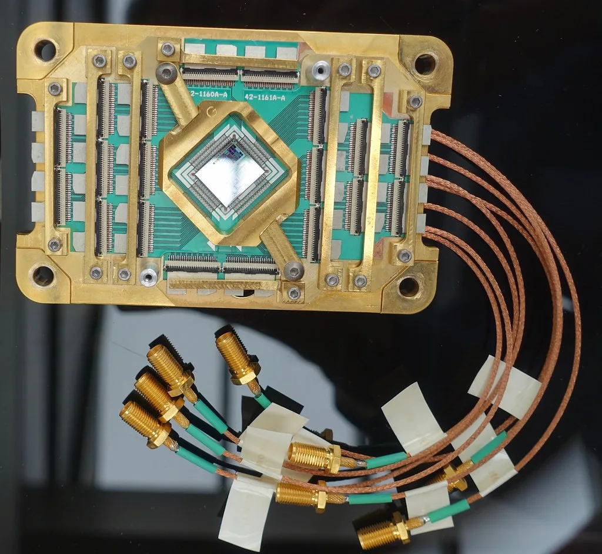

이재명 대통령, '7대 SEED' 미래성장동력 육성…SMR·양자·우주항공 집중 투자
이재명 대통령이 12일 소형모듈원자로(SMR), 핵융합, 재생에너지, 양자, 우주·항공, 첨단바이오, 첨단 소재·부품 공급망 등 7개 분야를 국가 핵심 전략 자산으로 육성하겠다고 밝혔다. 정부와 여당이 '7대 SEED'로 이름 붙인 이번 미래성장동력 프로젝트는 반도체와 인공지능(AI) 산업 이후를 대비하는 차기 메가프로젝트로 꼽힌다. 이 대통령은 이 자리에서 첨단산업 경쟁력과 과학기술력이 국력을 가늠하는 제1 지표라는 점을 강조하며, 반도체 다음 먹거리를 미리 준비해야 한다고 말했다.
7대 SEED는 크게 세 갈래로 구성된다. 소형모듈원자로와 핵융합, 재생에너지를 아우르는 '미래 청정에너지' 분야, 양자와 우주·항공, 첨단바이오를 포괄하는 '차세대 프론티어' 분야, 그리고 반도체 이후를 대비한 '첨단 소재·부품 공급망' 분야다. 정부는 이 세 축을 통해 에너지 자립과 첨단 연산 능력, 우주 개발, 바이오 혁신을 유기적으로 연결하겠다는 구상을 내놨다.

분야별 목표 시점도 구체적으로 제시됐다. 정부는 2029년까지 국산 100큐비트 양자컴퓨터 개발을 목표로 잡았고, 2030년에는 민간 달 착륙선 발사를 추진한다는 계획이다. 2035년까지는 경수형 소형모듈원자로 상용화와 함께 뇌-컴퓨터 인터페이스(BCI) 기술의 상용화도 이뤄내겠다는 목표를 세웠다. 핵융합의 경우 2035년 한국형 혁신 핵융합로를 건설하고, 2040년대에는 상용 발전까지 이어간다는 중장기 로드맵이 함께 제시됐다.
정부는 이번 프로젝트의 투자 전략으로 반도체와 AI 산업에서 축적한 자본과 제조 역량을 에너지·연산·우주·바이오 분야에 다시 투입하는 방식을 제시했다. 실험실 단계에 머물러 있는 기술을 실증과 인허가, 양산 단계까지 매끄럽게 연결하는 것이 핵심 과제로 꼽힌다. 다만 이번 발표에서는 프로젝트 전반에 걸친 구체적인 예산 규모나 민간 투자 유치 목표액은 별도로 공개되지 않았으며, 후속 발표를 통해 세부 재원 계획이 나올 것으로 예상된다.

이번 구상은 AI 기술 확산과 기후위기, 글로벌 공급망 불안정이라는 세 가지 흐름이 동시에 맞물리는 시점에서 나온 승부수로 해석된다. 반도체 산업이 이미 성숙 단계에 접어든 상황에서, 차세대 성장엔진을 조기에 확보하지 못하면 국가 경쟁력 격차가 벌어질 수 있다는 위기의식이 이번 프로젝트의 배경으로 꼽힌다. 특히 양자와 첨단바이오 등은 선진국 간 기술 패권 경쟁이 이미 치열하게 벌어지고 있는 분야여서, 정부의 육성 속도가 관건이 될 전망이다. 미국과 중국, 유럽연합 등 주요국이 이미 앞다퉈 관련 분야에 대규모 자금을 쏟아붓고 있는 만큼, 한국이 격차를 좁히려면 선택과 집중을 통한 효율적인 자원 배분이 필요하다는 목소리도 나온다.
산업계에서는 이번 발표를 계기로 관련 기업들의 연구개발 투자가 탄력을 받을 것이라는 기대와 함께, 정책의 일관성과 지속성이 뒷받침돼야 실질적인 성과로 이어질 수 있다는 신중론도 함께 나온다. 정권이 바뀌어도 장기 프로젝트가 흔들림 없이 추진될 수 있는 제도적 장치가 필요하다는 지적이다. 특히 원전과 핵융합처럼 10년 이상의 개발 기간이 필요한 분야는 예산 배정이 매년 들쭉날쭉할 경우 국제 경쟁에서 뒤처질 수 있다는 우려도 제기된다. 정부는 조만간 부처별 세부 실행 계획과 예산안을 마련해 국회에 보고할 예정이라고 밝혔다.